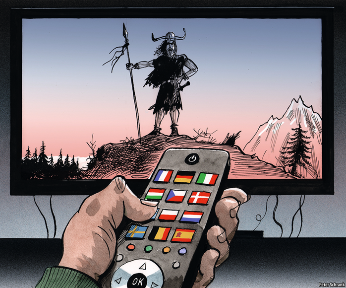

2021-04-30T11:45:46+00:00
Charlemagne
查理曼
查理曼
Netflix Europa
奈飞欧罗巴
奈飛歐羅巴
How streaming became a tool of European integration
流媒体如何成为了欧洲一体化的工具
流媒體如何成為了歐洲一體化的工具
“BARBARIANS”, A NETFLIX drama set 2,000 years ago in ancient Germania, inverts some modern stereotypes. In it, sexy, impulsive, proto-German tribesmen take on an oppressive superstate led by cold, rational Latin-speakers from Rome. Produced in Germany, it has all the hallmarks of a glossy American drama (gratuitous violence and prestige nudity) while remaining unmistakably German (in one episode someone swims through a ditch full of scheisse). It is a popular mix: on a Sunday in October, it was the most-watched show on Netflix not just in Germany, but also in France, Italy and 14 other European countries.
奈飞（Netflix）的电视剧《蛮战》（Barbarians）的背景设在两千年前的古日耳曼尼亚（Germania），它成功颠覆了一些现代的刻板印象。剧中，性感而冲动的原始日耳曼部落对抗压迫他们的超级帝国，领导后者的是冷酷、理性、满口拉丁语的罗马人。该剧在德国制作，具备了浮华美剧的一切特征（无端的暴力和华丽的裸体），同时又带有明白无误的德国味（其中一集中有人游过了一条满是粪便的水沟）。这种组合大受欢迎：在10月的一个周日，它不仅是德国地区收视率最高的奈飞剧集，在法国、意大利和其他14个欧洲国家也一样。
奈飛（Netflix）的電視劇《蠻戰》（Barbarians）的背景設在兩千年前的古日耳曼尼亞（Germania），它成功顛覆了一些現代的刻板印象。劇中，性感而衝動的原始日耳曼部落對抗壓迫他們的超級帝國，領導後者的是冷酷、理性、滿口拉丁語的羅馬人。該劇在德國製作，具備了浮華美劇的一切特徵（無端的暴力和華麗的裸體），同時又帶有明白無誤的德國味（其中一集中有人游過了一條滿是糞便的水溝）。這種組合大受歡迎：在10月的一個周日，它不僅是德國地區收視率最高的奈飛劇集，在法國、意大利和其他14個歐洲國家也一樣。
Moments when Europeans sit down and watch the same thing at roughly the same time used to be rare. They included the Eurovision Song Contest and the Champions League football, with not much in between. Now they are more common, thanks to the growth of streaming platforms such as Netflix, which has 58m subscribers on the continent. For most of its existence, television was a national affair. Broadcasters stuck rigidly to national borders, pumping out French programmes for the French and Danish ones for the Danes. Streaming services, however, treat Europe as one large market rather than 27 individual ones, with the same content available in each. Jean Monnet, one of the EU’s founding fathers, who came up with the idea of mangling together national economies to stop Europeans from killing each other, was once reputed to have said: “If I were to do it again from scratch, I would start with culture.” Seven decades on from the era of Monnet, cultural integration is beginning to happen.
在过去，欧洲人在差不多同一时间坐下来收看同一档节目的时候可不多。欧洲歌唱大赛和欧冠联赛是其中两档，在它们之间就寥寥可数了。如今这种时刻更常见了，这要归功于流媒体平台的发展，比如在欧洲大陆已拥有5800万订户的奈飞。电视自诞生以来，大部分时间里都是国家事务。广播电视公司严守国界，为法国人提供法国节目，为丹麦人提供丹麦节目。然而，流媒体服务把欧洲看做一个大市场，而非27个单独市场，在每个市场都提供相同的内容。欧盟的创始人之一让·莫内（Jean Monnet）提出了融合各国经济来避免欧洲人自相残杀的理念。据说他曾表示：“如果可以从头再来一次，我会从文化入手。”莫内的时代已经过去了70年，文化正开始融合。
在過去，歐洲人在差不多同一時間坐下來收看同一檔節目的時候可不多。歐洲歌唱大賽和歐冠聯賽是其中兩檔，在它們之間就寥寥可數了。如今這種時刻更常見了，這要歸功於流媒體平台的發展，比如在歐洲大陸已擁有5800萬訂戶的奈飛。電視自誕生以來，大部分時間裡都是國家事務。廣播電視公司嚴守國界，為法國人提供法國節目，為丹麥人提供丹麥節目。然而，流媒體服務把歐洲看做一個大市場，而非27個單獨市場，在每個市場都提供相同的內容。歐盟的創始人之一讓·莫內（Jean Monnet）提出了融合各國經濟來避免歐洲人自相殘殺的理念。據說他曾表示：“如果可以從頭再來一次，我會從文化入手。”莫內的時代已經過去了70年，文化正開始融合。
Umberto Eco, an Italian writer, was right when he said the language of Europe is translation. Netflix and other deep-pocketed global firms speak it well. Just as the EU employs a small army of translators and interpreters to turn intricate laws or impassioned speeches of Romanian MEPs into the EU’s 24 official languages, so do the likes of Netflix. It now offers dubbing in 34 languages and subtitling in a few more. The result is that “Capitani”, a cop drama written in Luxembourgish, a language so modest it is not even recognised by the EU, can be watched in any of English, French or Portuguese (or with Polish subtitles). Before, a top French show could be expected to be translated into English, and perhaps German, only if it was successful. Now it is the norm for any release.
意大利作家安贝托·艾柯（Umberto Eco）曾说过，欧洲的语言就是翻译。此言不虚。奈飞和其他财大气粗的跨国公司把这门语言说得很好。正如欧盟雇用了一大批笔译和口译人员，将错综复杂的法律或欧洲议会里罗马尼亚议员的激情演讲翻译成欧盟的24种官方语言，奈飞这样的公司也干差不多的事。它现在已提供34种语言的配音，字幕的语种还要再多几个。这样一来，用原本非常小众、甚至不被欧盟认可的卢森堡语写就的探案剧《秘林迷村》（Capitani）也能以英语、法语或葡萄牙语配音（或加上波兰语字幕）观看。在此之前，一部法国大剧只有在获得成功之后才有望被翻译成英语，可能还有德语。而现在，这是所有节目的标配。
意大利作家安貝托·艾柯（Umberto Eco）曾說過，歐洲的語言就是翻譯。此言不虛。奈飛和其他財大氣粗的跨國公司把這門語言說得很好。正如歐盟僱用了一大批筆譯和口譯人員，將錯綜複雜的法律或歐洲議會裡羅馬尼亞議員的激情演講翻譯成歐盟的24種官方語言，奈飛這樣的公司也干差不多的事。它現在已提供34種語言的配音，字幕的語種還要再多幾個。這樣一來，用原本非常小眾、甚至不被歐盟認可的盧森堡語寫就的探案劇《秘林迷村》（Capitani）也能以英語、法語或葡萄牙語配音（或加上波蘭語字幕）觀看。在此之前，一部法國大劇只有在獲得成功之後才有望被翻譯成英語，可能還有德語。而現在，這是所有節目的標配。
The economics of European productions are more appealing, too. American audiences are more willing than before to give dubbed or subtitled viewing a chance. This means shows such as “Lupin”, a French crime caper on Netflix, can become global hits. It is worth taking a punt on an expensive retelling of an early-20th-century detective series about a gentleman jewel thief in Paris, if it has the potential to explode beyond France. In 2015, about 75% of Netflix’s original content was American; now the figure is half, according to Ampere, a media-analysis company. Netflix has about 100 productions under way in Europe, which is more than big public broadcasters in France or Germany.
欧洲剧集在经济效益上也变得更有吸引力了。美国观众比以前更乐意尝试配音或配字幕的节目。这意味着奈飞的法国犯罪喜剧《亚森·罗平》（Lupin）也有机会成为全球热门剧集。这部20世纪初的系列侦探小说描绘了一个风度翩翩的巴黎珠宝大盗，如果它有可能在法国以外的地方爆红，那么即使花费重金拍成电视剧也是值得的。媒体分析公司Ampere称，2015年，奈飞约75%的原创内容来自美国，而现在只有一半。奈飞正在欧洲制作约100部作品，比法国或德国的大型公共广播公司还多。
歐洲劇集在經濟效益上也變得更有吸引力了。美國觀眾比以前更樂意嘗試配音或配字幕的節目。這意味着奈飛的法國犯罪喜劇《亞森·羅平》（Lupin）也有機會成為全球熱門劇集。這部20世紀初的系列偵探小說描繪了一個風度翩翩的巴黎珠寶大盜，如果它有可能在法國以外的地方爆紅，那麼即使花費重金拍成電視劇也是值得的。媒體分析公司Ampere稱，2015年，奈飛約75%的原創內容來自美國，而現在只有一半。奈飛正在歐洲製作約100部作品，比法國或德國的大型公共廣播公司還多。
And European officials wield a stick to encourage investment. European film-makers rival farmers in the ranking of cosseted European industries. To operate in the EU, streaming companies are required to ensure at least 30% of their catalogue hails from the bloc—and to promote it. Buying a back catalogue of 1990s Belgian soap operas and hiding them in a digital cupboard does not count. France compels big media firms to kick back revenues into domestic production. If European governments are intent on shaking down big American firms, it is better for everyone that the money is spent on something watchable.
而欧洲官员挥舞大棒鼓励投资。在受保护的行业中，欧洲影视制作人受到的关照和农民不相上下。要想在欧盟运营，流媒体公司必须确保至少30%的剧目来自欧盟，而且必须加以推广。光是买一堆1990年代的比利时老肥皂剧来埋进数字橱柜里可不算数。法国要求大型媒体公司必须把收入再投入到本地节目制作上。既然欧洲各国政府执意要让美国的大公司下点血本，那还是把钱花在一些值得一看的作品上才皆大欢喜。
而歐洲官員揮舞大棒鼓勵投資。在受保護的行業中，歐洲影視製作人受到的關照和農民不相上下。要想在歐盟運營，流媒體公司必須確保至少30%的劇目來自歐盟，而且必須加以推廣。光是買一堆1990年代的比利時老肥皂劇來埋進數字櫥櫃里可不算數。法國要求大型媒體公司必須把收入再投入到本地節目製作上。既然歐洲各國政府執意要讓美國的大公司下點血本，那還是把錢花在一些值得一看的作品上才皆大歡喜。
Not everything works across borders. Comedy sometimes struggles. Whodunits and bloodthirsty maelstroms between arch Romans and uppity tribesmen have a more universal appeal. Some do it better than others. Barbarians aside, German television is not always built for export, says one executive, being polite. A bigger problem is that national broadcasters still dominate. Streaming services, such as Netflix or Disney+, account for about a third of all viewing hours, even in markets where they are well-established. Europe is an ageing continent. The generation of teens staring at phones is outnumbered by their elders who prefer to gawp at the box.
并不是所有内容都能跨越国界。喜剧有时就比较难。侦探剧比较容易被普遍接受，高高在上的罗马人与桀骜不驯的部落之间的血腥混战也有普遍的吸引力。有些做得比其他好。一位德国高管客气地表示，除去《蛮战》，德国电视并不都适合出口。更大的问题是，国家广播公司仍然占据主导地位。奈飞或迪士尼+等流媒体服务只占总观看时长的三分之一，即使在它们地位稳固的市场也是如此。欧洲正在老龄化。整天捧着手机的青少年数量还是比不上喜欢坐在电视机前的长辈。
並不是所有內容都能跨越國界。喜劇有時就比較難。偵探劇比較容易被普遍接受，高高在上的羅馬人與桀驁不馴的部落之間的血腥混戰也有普遍的吸引力。有些做得比其他好。一位德國高管客氣地表示，除去《蠻戰》，德國電視並不都適合出口。更大的問題是，國家廣播公司仍然佔據主導地位。奈飛或迪士尼+等流媒體服務只佔總觀看時長的三分之一，即使在它們地位穩固的市場也是如此。歐洲正在老齡化。整天捧着手機的青少年數量還是比不上喜歡坐在電視機前的長輩。
Actually, I want to direct
实际上，我想当导演
實際上，我想當導演
In Brussels and national capitals, the prospect of Netflix as a cultural hegemon is seen as a threat. “Cultural sovereignty” is the watchword of European executives worried that the Americans will eat their lunch. To be fair, Netflix content sometimes seems stuck in an uncanny valley somewhere in the mid-Atlantic, with local quirks stripped out. Netflix originals tend to have fewer specific cultural references than shows produced by domestic rivals, according to Enders, a market analyst. The company used to have an imperial model of commissioning, with executives in Los Angeles cooking up ideas French people might like. Now Netflix has offices across Europe. But ultimately the big decisions rest with American executives. This makes European politicians nervous.
在布鲁塞尔和各国首都，人们担心奈飞有朝一日会成为文化霸主。欧洲企业高管担心美国人会蚕食他们的地盘，经常把“文化主权”挂在嘴边。说句公道话，奈飞的节目内容有时就像困在大西洋中部的某个诡异谷，全然没有地方特色。市场分析公司恩德斯（Enders）认为，与本国竞争对手制作的电视剧相比，奈飞原创剧往往较少涉及特定的文化因素。该公司过去采用了一种帝国式的委托模式，由洛杉矶的高管炮制出法国人可能会喜欢的创意。现在，奈飞在欧洲各地都设有办事处。但重大决策最终还是由美国高管做出。这让欧洲政客感到紧张。
在布魯塞爾和各國首都，人們擔心奈飛有朝一日會成為文化霸主。歐洲企業高管擔心美國人會蠶食他們的地盤，經常把“文化主權”掛在嘴邊。說句公道話，奈飛的節目內容有時就像困在大西洋中部的某個詭異谷，全然沒有地方特色。市場分析公司恩德斯（Enders）認為，與本國競爭對手製作的電視劇相比，奈飛原創劇往往較少涉及特定的文化因素。該公司過去採用了一種帝國式的委託模式，由洛杉磯的高管炮製出法國人可能會喜歡的創意。現在，奈飛在歐洲各地都設有辦事處。但重大決策最終還是由美國高管做出。這讓歐洲政客感到緊張。
They should not be. An irony of European integration is that it is often American companies that facilitate it. Google Translate makes European newspapers comprehensible, even if a little clunky, for the continent’s non-polyglots. American social-media companies make it easier for Europeans to talk politics across borders. (That they do not always like to hear what they say about each other is another matter.) Now Netflix and friends pump the same content into homes across a continent, making culture a cross-border endeavour, too. If Europeans are to share a currency, bail each other out in times of financial need and share vaccines in a pandemic, then they need to have something in common—even if it is just bingeing on the same series. Watching fictitious northern and southern Europeans tear each other apart 2,000 years ago beats doing so in reality. ■
其实他们不应该担心。讽刺的是，促进欧洲一体化的往往是美国公司。对于那些不懂多种语言的欧洲人来说，尽管谷歌翻译有点生硬，但毕竟让他们都能读懂欧洲的报纸了。美国的社交媒体公司也让欧洲人更容易跨越国界谈论政治。（他们并不总喜欢听到对彼此的看法又是另一回事了。）如今，奈飞等美国公司为整个欧洲大陆的家庭提供同样的内容，使文化也可以跨国界传播。如果欧洲人打算共用一种货币，在经济困境中互相救助，在疫情中分享疫苗，那么他们也需要有一些共同点——哪怕只是在刷同一部电视剧。观看两千年前北欧人和南欧人互相厮杀的虚构情节，总比在现实中打得你死我活要好。
其實他們不應該擔心。諷刺的是，促進歐洲一體化的往往是美國公司。對於那些不懂多種語言的歐洲人來說，儘管谷歌翻譯有點生硬，但畢竟讓他們都能讀懂歐洲的報紙了。美國的社交媒體公司也讓歐洲人更容易跨越國界談論政治。（他們並不總喜歡聽到對彼此的看法又是另一回事了。）如今，奈飛等美國公司為整個歐洲大陸的家庭提供同樣的內容，使文化也可以跨國界傳播。如果歐洲人打算共用一種貨幣，在經濟困境中互相救助，在疫情中分享疫苗，那麼他們也需要有一些共同點——哪怕只是在刷同一部電視劇。觀看兩千年前北歐人和南歐人互相廝殺的虛構情節，總比在現實中打得你死我活要好。